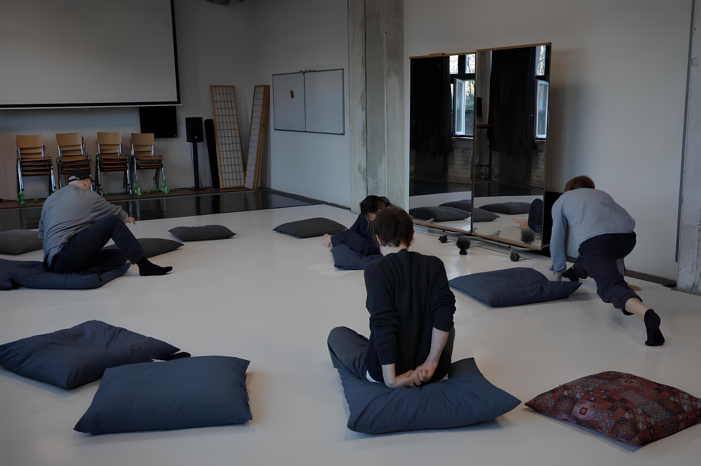
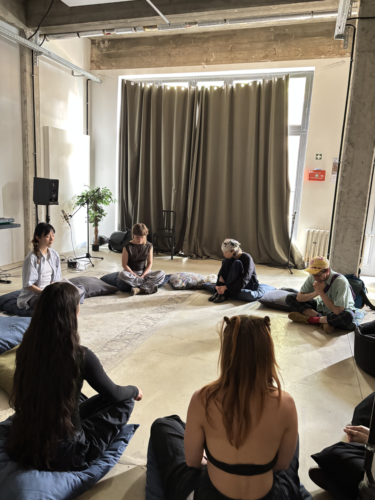
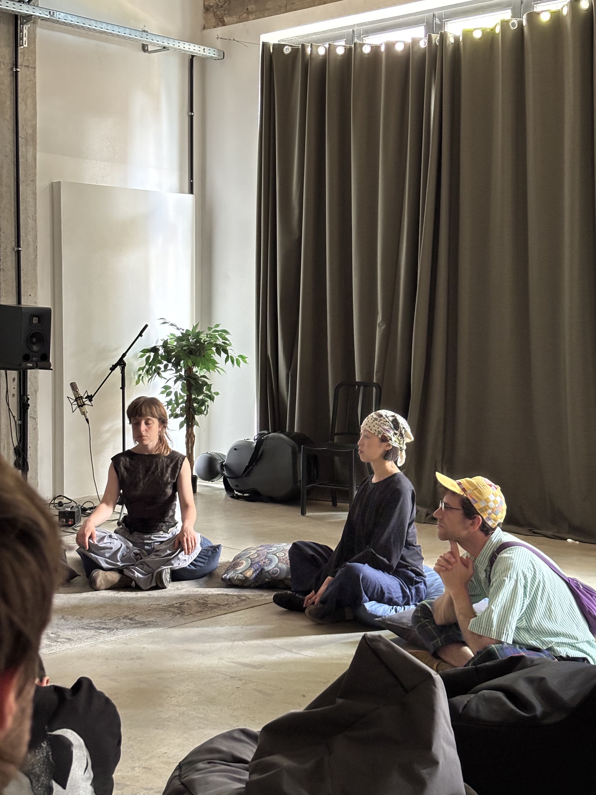

Ongoing Series — London / Berlin — 2025–
A guided sonic meditation and experimental embodiment session — rooted in improvisation, deep listening, and the sounds already held in the body.

About the session
teachyourselftofly is a guided sonic meditation and experimental embodiment jam rooted in improvisation, text and graphic scores, and deep listening. Participants are invited to explore sound through everyday materials, voice, and movement — creating a collective sonic journey shaped by curiosity and shared attention.
No prior experience or equipment is required. The only thing the session asks for is a willingness to listen differently.


Format
Curated by
Fe curates teachyourselftofly, a weekly sound art practice and community exploring improvisation and experimental performance. Their work centres on collective expression, embodied listening, and accessible approaches to sound-making within a supportive, open environment.
Most recently presented at Spatial Audio Forum, Berlin (March 2026). Part of a wider practice researching sub-audible frequency, biosensor data, and the relationship between sound and the body.
Propose a session →